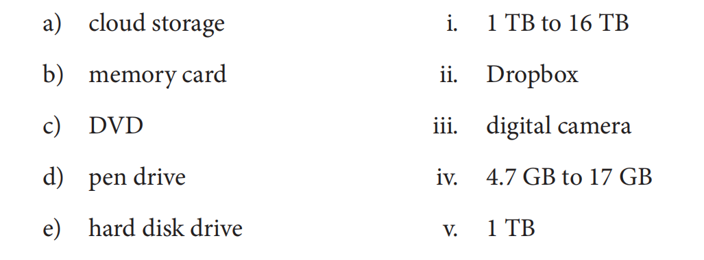
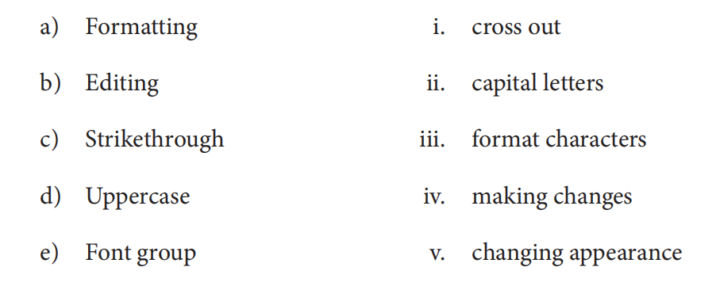
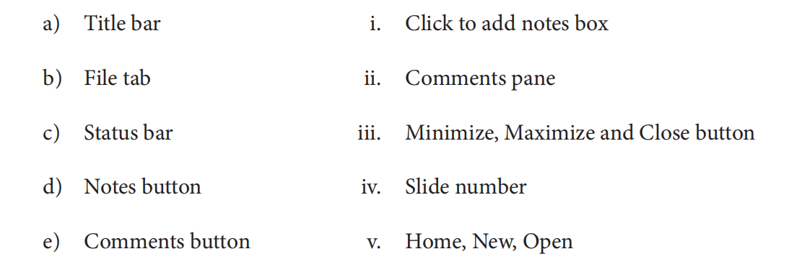
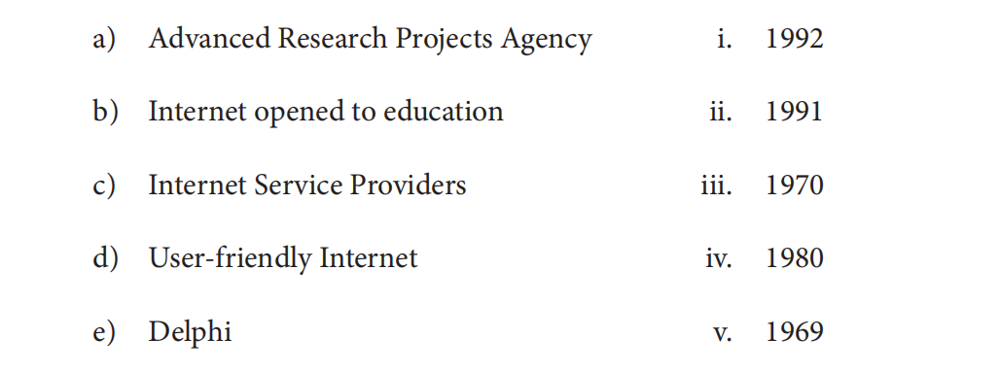

Step 1Select Chapter Name
Test Name :
Test Duration :
Total Marks :
Select Question Type :
Question Mode :
Chapter 1
Chapter 2
Chapter 3
Chapter 4
Chapter 5
Chapter 6
Chapter 7
Chapter 8
OK Test
Total Marks -
Selected Marks - 1
Total Time -
Enter Details
Number Of Questions
Marks Per Question
Multiple Choice Question
Write ‘T’ for true and ‘F’ for false statements
Match The following Question
Name the following Question
Fill in the blanks.
Write the full forms of the following Logo commands.
Short Answer Questions
Long Answer Questions
Marks Per Question
- Which one of these is not a hardware part?
i. Corel draw ii. Monitor iii. Hard disk Ans: i - Which one of these is not a type of monitor?
i. CRT ii. LED iii. XFD Ans: iii - ___________ performs all the arithmetic calculations.
i. Control unit ii. Arithmetic logic unit iii. Memory unit Ans: ii - The full form of UPS is:
i. Uninterruptible Power Supply ii. Understandable Power Supply iii. Unity for Power Supply Ans: i - Which one of these is an example of System Software?
i. MS Word ii. Windows iii. Gnumeric Ans: ii
------ Chapter 1 ------
- ___________ are the standard units used for measuring the storage capacity of computers.
i. Bits ii. Bytes iii. Kilobits
Ans: ii - The memory devices are also called ____________ .
i. listening devices ii. storage devicesiii. binary devices
Ans: ii - ____________ are called binary digits or bits.
i. 8 and 9 ii. 5 and 6iii. 0 and 1
Ans: iii - 1024 KB make up ____________ .
i. 1 Kilobyte ii. 1 Megabyteiii. 1 Gigabyte
Ans: ii - ____________ is called the non-volatile memory.
i. ROM ii. RAMiii. CD
Ans: i
------ Chapter 2 ------
- Which one of these options allows you to make changes to the desktop screen?
i. Shortcut ii. Personalizeiii. Quick access Ans: ii - A ______________ is a software program that becomes activated after the
computer has been inactive for a specified amount of time.
i. Screensaver ii. Quick accessiii. Desktop background Ans: i - Which one of these displays small icons of time, date, volume, network connection, etc?
i. Quick access ii. Shortcut menuiii. Notification area Ans: iii - It shows a list of the frequently used folders and the files that you have
accessed recently
i. Quick access ii. Shortcut menu iii. Notification area Ans: i - Bringing back a file or folder from the Recycle bin is called ________________
i. copying ii. restoring iii. moving Ans: ii
------ Chapter 3 ------
- In which of these modes does the old text get replaced with the new text?
i. Insert ii. Overtypeiii. None of these Ans: ii - It means changing the appearance of the text.
i. Editing ii. Formattingiii. Composing Ans: ii - ____________ is used to place the selected text a little higher than the rest
of the text
i. Subscript ii. Strikethroughiii. Superscript Ans: iii - In which case are all the selected letters converted to small letters?
i. lowercase ii. Sentence case iii.Capitalize Each Word Ans: i `,
- Which one of these gives a background colour to the selected text?
i. Strikethrough ii. Format Painter iii. Text Highlight Color Ans: iii
------ Chapter 4 ------
- ________________ command brings the turtle back to the drawing mode.
i. PPT ii. PEiii. PU Ans: i - _______________ command lifts the turtle’s pen up from the screen.
i. PPT ii. PEiii. PU Ans: iii - The full form of SETPC command is:
i. SETPENCOLOR ii. SETPENSCREENiii. SETPENCOMMAND Ans: i - _______________ command is used to fill colour in a closed shape.
i. SETPC ii. SETSC iii. SETFC Ans: iii - Color index is a number between:
i. 0–6 ii. 0–15 iii. 0–25 Ans: ii
------ Chapter 5 ------
- Which one of these is used to create an attractive presentation?
i. Pictures ii. Chartsiii. Both of these Ans: iii - It shows the Save, Undo, and Redo commands
i. Ribbon ii. Title bariii. Quick Access toolbar Ans: iii - Which one of these is used to view the slides in different formats?
i. Notes button ii. View buttoniii. Comments button Ans: ii - We can move to the previous slide by pressing the _____________ key.
i. Esc ii. Left arrow iii. Up arrow Ans: iii - Which one of these keys is used to run a slide show?
i. F5 ii. F6 iii. F7 Ans: i
------ Chapter 6 ------
- Which one of these Internet connections requires a telephone line?
i. Cable TV ii. Dial-upiii. Satellite Ans: ii - Which one of these creates an Internet account for us and assigns a
username and password?
i. ISP ii. NDSiii. VLS Ans: i - ________________connection uses a satellite dish antenna and a
transceiver to transmit and receive the messages.
i. Broadband ii. Dial-upiii. Satellite Ans: iii - Which one of these is not an application area of the Internet?
i. Washing ii. Entertainment iii. Communication Ans: i - ______________allows you to access the Internet by simply plugging
into the USB port.
i. Pen drive ii. Internet dongle iii. Wi-Fi Ans: ii
------ Chapter 7 ------
- ______________ is a block-based programming language used to create
stories, interactive arts, games and animations.
i. Logo ii. Scratchiii. Basic Ans: ii - Who among these developed the Scratch programming language?
i. Mitchel Resnick ii. Ronald Kipsiii. Stephen Hawkings Ans: i - ________________ is the main character of the Scratch programming
language.
i. Stage ii. Scriptiii. Sprite Ans: iii - Which one of these blocks can make the Sprite move, turn, bounce, etc.?
i. Pen ii. Variable iii. Motion Ans: iii - Which one of these can run the Script.
i. Stop Flag ii. Go Flag iii. Ready Flag Ans: ii
------ Chapter 8 ------
- Application software is a software which is specially designed to perform some specific tasks.
Ans: T - Control unit stores all the data and instructions.
Ans: F - Software refers to the parts of a computer that we can touch and see.
Ans: F - A CPU box has the Central Processing Unit (CPU) inside.
Ans: T - Adobe InDesign is an example of word processing software.
Ans: F
----- Chapter 1 ------
- A string of 8 bits is called a byte.
Ans: T - Read Only Memory (ROM) is a temporary memory.
Ans: F - Cloud storage can store a huge amount of data on remote servers using the Internet.
Ans: T - A pen drive temporarily stores data for some time.
Ans: F - Primary memory is also called the external memory.
Ans: F
----- Chapter 2 ------
- A Shortcut menu appears when we right-click on the desktop.
Ans: T - A screensaver once applied, cannot be removed.
Ans: F - You cannot set date and time manually in Windows 10.
Ans: F - Quick access shows a list of the frequently used folders and
the files that you have accessed recently.
Ans: T - You can bring back a file or folder from the Recycle bin.
Ans: T
----- Chapter 3 ------
- Selection can be done using the mouse or the keyboard
Ans: T - Subscript is used to place the selected text a little higher than
the rest of the text.
Ans: F - Bold will make the selected text a little tilted than the rest of the text.
Ans: F - The shape and appearance of characters is known as Font.
Ans: T - Formatting means making changes in the text.
Ans: F
----- Chapter 4 ------
- PowerPoint is an application software used to design presentations.
Ans: T - A theme is a group of slides arranged in a systematic order
Ans: F - To stop a slide show, press the F5 key.
Ans:F - The presentation of a series of slides individually on
a full screen is known as Slide Show.
Ans: T - When you create a new presentation, a single slide called
‘Title and Content Slide’ appears.
Ans: T
----- Chapter 6 ------
- In the year 1980, a user-friendly Internet interface was developed.
Ans: F - ARPANET was used to transfer confidential data between
military units.
Ans: T - Broadband Internet is slower and expensive.
Ans:F - In a wireless connection, a smartphone is used as an
Internet connection by either creating a Hotspot or via Bluetooth.
Ans: T - Internet allows you to wash clothes easily.
Ans: F
----- Chapter 7 ------
- You cannot create a duplicate copy of the Sprite.
Ans: F - Forever command executes the commands inside it again and again.
Ans: T - Repeat command is present inside the Event block.
Ans:F - Script area is the area where all the instructions for the Sprite
are dragged to form the blocks.
Ans: T - Blocks area is the working area where a Sprite performs.
Ans: F
----- Chapter 8 ------

Ans: a) ii b) iii c) iv d) v e) i
------ Chapter 2 ------

Ans:a) v b) iv c) i d) ii e) iii
------ Chapter 4 ------

Ans: a) iii b) v c) iv d) i e) ii
------ Chapter 6 ------

Ans: a) v b) iii c) iv d) ii e) i
------ Chapter 7 ------
- What do you mean by hardware? Give some example
____________________________________________________________________________________
____________________________________________________________________________________
Ans: Hardware refers to the parts of a computer that we can touch and see, such as monitor, keyboard, mouse, UPS, CPU box, etc. - What is a software? Give examples.
____________________________________________________________________________________
____________________________________________________________________________________
Ans: A software is a set of instructions called programs given to a computer to make it work. Microsoft Windows, MS Word, Linux, OpenOffice Impress, etc. are some examples of software. - Differentiate between System software and Application software
____________________________________________________________________________________
____________________________________________________________________________________
Ans: System software is a set of programs which controls the overall functioning of a computer.
Application software is a software which is specially designed to perform some specific tasks.
------ Chapter 1 ------
- What do you understand by a computer’s memory?
____________________________________________________________________________________
____________________________________________________________________________________
Ans: A computer uses its memory to store information. when we input data in a computer and it processes the data into information, that information is stored in the computer’s internal memory. - Differentiate between primary memory and secondary memory.
____________________________________________________________________________________
____________________________________________________________________________________
Ans: Primary memory, also called the internal memory, is the main memory of a computer. It is of two types—RAM and ROM.
Secondary memory, also called the external memory, is used to store information permanently. It stores the information even after the computer is turned off. - Why is RAM called the volatile memory?
____________________________________________________________________________________
____________________________________________________________________________________
Ans: RAM is called the volatile memory because the information stored in RAM is lost when the computer is turned off. - What is cloud storage? Why is it popular nowadays?
____________________________________________________________________________________
____________________________________________________________________________________
Ans: Cloud storage is a remote server on which data is stored with the help of the Internet. It is popular now a days because it can store a huge amount of data. We can store pictures, videos, important documents, etc., from our computer and smartphone in the cloud storage.
------ Chapter 2 ------
- What is Quick access?
____________________________________________________________________________________
____________________________________________________________________________________
Ans: Quick access is a feature that appears when we open File Explorer or This PC icon in Windows 10. It shows a list of the frequently used folders and the files that we have accessed recently. This list changes over time as you access different files and folders.
------ Chapter 3 ------
- How do you insert text in MS Word 2016?
____________________________________________________________________________________
____________________________________________________________________________________
Ans: In Word 2016, text can be inserted in between the existing text in two ways—
• Overtype or Overwrite mode: When we type in this mode, the old text gets replaced with the new text.
• Insert mode: In this mode, the new text does not replace the old text. When we type, the old text gets shifted towards the right. - What is the difference between editing and formatting?
____________________________________________________________________________________
____________________________________________________________________________________
Ans: Editing means making changes in the text whereas formatting means changing the appearance of the text.
------ Chapter 4 ------
- What is the use of PENUP and PENDOWN commands?
____________________________________________________________________________________
____________________________________________________________________________________
____________________________________________________________________________________
Ans: PENUP command lifts the turtle’s pen up from the screen. PENDOWN command puts the turtle’s pen down on the screen. - Write a command in Logo using PRINT command to display the multiplication
of two numbers.
____________________________________________________________________________________
____________________________________________________________________________________
____________________________________________________________________________________
Ans: PRINT PRODUCT 15 4 - What is the use of SETPENSIZE command? Give example.
____________________________________________________________________________________
____________________________________________________________________________________
____________________________________________________________________________________
Ans: SETPENSIZE command is used to change the thickness of the pen. For example, SETPC 4
------ Chapter 5 ------
- What is a presentation?
____________________________________________________________________________________
____________________________________________________________________________________
Ans: A group of slides arranged in a systematic order is called a presentation. - What is a placeholder?
____________________________________________________________________________________
____________________________________________________________________________________
Ans: Placeholder is a dotted rectangular box in the Slides Pane in which you can type text, add images and other graphics. - How do you add text in a slide?
____________________________________________________________________________________
____________________________________________________________________________________
Ans: The steps to add text in a slide are as follows—
Step 1: Click on the ‘Click to add Title’ placeholder. The placeholder will be selected, and a cursor appears in it. Ty
Step 2: Click outside the placeholder and the text appears on a slide.
------ Chapter 6 ------
- What is the Internet?
____________________________________________________________________________________
____________________________________________________________________________________
Ans: File Internet is the world’s largest network in which millions of computers are connected to each other using routers and switches for communication
------ Chapter 7 ------
- What is Scratch? Who developed it?
____________________________________________________________________________________
____________________________________________________________________________________
Ans: Scratch is a block-based programming language used to create stories, interactive arts, games and animations. It is developed by Lifelong Kindergarten Group at the Massachusetts Institute of Technology (MIT) Media Lab. - Differentiate between Sprite and Stage.
____________________________________________________________________________________
____________________________________________________________________________________
Ans: Sprite is a small graphic character that performs different actions such as moving, turning, bouncing, etc. The sprite follows the commands given by us.
Stage is the working area where a Sprite performs. We can move the sprite and perform certain actions in this area
------ Chapter 8 ------
- Explain the components of CPU
____________________________________________________________________________________
____________________________________________________________________________________
Ans: The CPU consists of three main components—
• Arithmetic Logic Unit (ALU): It performs all the arithmetic calculations like addition, subtraction, multiplication, division, etc. It also performs all the logical operations like finding the greater or smaller number, etc.
• Control Unit (CU): It controls all the workings of a computer and also manages the movement of data between the ALU and the memory of the computer.
• Memory Unit: It stores all the data and instructions. It is also called the main memory or primary memory because it lies inside the CPU. - How many types of monitors are there? Explain each of them.
____________________________________________________________________________________
____________________________________________________________________________________
Ans: Monitors are of three types—
• Cathode ray tube (CRT) monitors are the oldest monitors that look like a box. They are larger in size and do last a very long time.
• Liquid crystal display (LCD) monitors are the most popular ones these days. They have a flat screen and are much lighter than CRT monitors.
• Light-emitting diodes (LED) monitors are the latest type of monitors. They are similar to LCD monitors but are flatter than LCD and use much less power than CRT and LCD monitors.
----- Chapter 1 ------
- Explain any two secondary memory devices.
____________________________________________________________________________________
____________________________________________________________________________________
Ans: Hard disk drive: It consists of a number of disks that save the work that is done on a computer. It can store large amounts of data. A hard disk has a capacity to store data from 1 TB to 16 TB.
Pen drive: It is also called a flash drive. It is a small portable secondary storage device used to store information permanently. It can store data up to 1 TB.
----- Chapter 2 ------
- What is a screensaver? Write the steps to apply a screensaver
____________________________________________________________________________________
____________________________________________________________________________________
Ans: A screensaver is a software program that becomes activated after the computer has been inactive for a specified amount of time. The steps to apply a screensaver are as follows—
Step 1: Right-click on the desktop’s blank area. The Shortcut menu appears.
Step 2: Click on the Personalize option. The Personalization window opens.
Step 3: In the left pane, select the Lock Screen option.
Step 4: In the right pane, select the Screen saver settings option. A Screen Saver Settings dialog box opens.
Step 5: From the Screen-saver drop-down arrow, select Bubbles.
Step 6: To preview the screensaver, click on the Preview tab.
Step 7: Set the time in the Wait box by clicking on the up and down arrows.
Step 8: Click on the Ok button. - How do you set date and time manually in Windows 10?
____________________________________________________________________________________
____________________________________________________________________________________
Ans: The steps to set date and time manually in Windows 10 are as follows—
Step 1: Click on the right corner in the Notification area of the taskbar. A small window opens up.
Step 2: Click on All Settings. The Settings window opens up.
Step 3: Click on the Time & Language option.
Step 4: In the appearing Date & Time window, click on the Change button under the option to Set the date and time manually. A Change date and time dialog box appears.
Step 5: Make the changes using the Date / Time drop-down list.
Step 6: Click on the Change button to apply the changes. - Write the steps to restore a deleted file or folder.
____________________________________________________________________________________
____________________________________________________________________________________
Ans: The steps to restore a file or folder are as follows—
Step 1: Double-click on the Recycle bin icon on the desktop. The Recycle bin window opens up.
Step 2: Click on the file or folder that is to be restored.
Step 3: Click on the Restore option. - Differentiate between copying and moving? Write the steps to move a folder
from desktop to E drive.
____________________________________________________________________________________
____________________________________________________________________________________
Ans: Copying means placing a file or folder at another location without removing it from its original location. Moving means removing a file or a folder from its original location and placing it at another location.
The steps to move a folder from desktop to E drive are as follows—
Step 1: Right-click the file or folder present on the desktop. The Shortcut menu appears.
Step 2: Click on the Cut option.
Step 3: Now, open Windows Explorer and double click on E drive. A drive E pane opens up.
Step 4: Now right-click and click on the Paste option from the shortcut menu.
----- Chapter 3 ------
- How do you apply the same formatting to the rest of the text in Word
without doing it again and again? Write the steps.
____________________________________________________________________________________
____________________________________________________________________________________
Ans: Format Painter option is used to apply the same formatting to the rest of the text in Word without doing it again and again. The steps are as follows—
Step 1: Select the text to copy the formatting and click on the Home tab.
Step 2: Select the Format Painter option from the Clipboard group. The cursor changes to Cursor + Brush.
Step 3: Click the text where the format is to be copied. - Write the steps to change the colour of the font.
____________________________________________________________________________________
____________________________________________________________________________________
Ans: The steps to change the colour of the font are as follows—
Step 1: Select the text and click on the Home tab.
Step 2: In the Font group, click on the arrow next to Font Color option.
Step 3: Select the desired colour from the colour palette. - What is Change Case option? Write the steps to change the case of the text.
____________________________________________________________________________________
____________________________________________________________________________________
Ans: Change Case option is used to change the case of the selected text without retyping it.
The steps to change the case of text are as follows—
Step 1: Select the text and click the Home tab.
Step 2: Click on the drop-down arrow of Change Case option in Font group. The list of five options of Change case— Sentence case, lowercase, UPPERCASE, Capitalize Each Word and tOGGLE cASE appears.
Step 3: Choose the desired case.
----- Chapter 4 ------
- Differentiate between SETFC and SETSC commands by giving examples.
____________________________________________________________________________________
____________________________________________________________________________________
____________________________________________________________________________________
Ans: SETFC stands for SETFLOODCOLOR. This command is used to fill colour in a closed shape. SETSC stands for SETSCREENCOLOR. This command sets the background colour. For example,
SETSC 3
SETPC 5
REPEAT 360 [FD 1 RT 1]
PU
RT 10
FD 10
SETFC 4
FILL
This will draw a red-coloured circle on a blue background in Logo. - How is the REPEAT command useful in drawing closed figures?
____________________________________________________________________________________
____________________________________________________________________________________
____________________________________________________________________________________
Ans: With the help of REPEAT command, we can easily draw polygons such as triangle, square, pentagon etc. by typing just one command instead of having to type the same commands several times
----- Chapter 5 ------
`, `
- What is a theme? Write the steps to add theme to a slide
____________________________________________________________________________________
____________________________________________________________________________________
Ans: A theme is a predefined combination of colours, fonts, and effects for a slide. The steps to apply theme to a slide are as follows—
Step 1: Click on the Design tab.
Step 2: Click the More button in the Themes group.
Step 3: Select a theme from the gallery. - What is a slide show? Write the steps to run a slide show.
____________________________________________________________________________________
____________________________________________________________________________________
Ans: When we present a series of slides individually on a full screen, it is known as a Slide Show. We can run a slide show either from the beginning of a slide or from the current slide. To run a slide show—
Step 1: Click on the Slide Show tab.
Step 2: Click on From Beginning or From Current Slide in the Start Slide Show group.
----- Chapter 6 ------
- Describe in brief the history of the Internet.
____________________________________________________________________________________
____________________________________________________________________________________
Ans: The history of the Internet has its origins in the research experiment of the Advanced Research Projects Agency (ARPA) of the U.S. Department of Defense in 1969 for the development of the ARPANET, which stands for Advanced Research Projects Agency Network. ARPANET is considered the first known group of interconnected computers called the Internet. This system was used to transfer confidential data between military units. It was then opened to educational institutes and the general public in the 1970s. Internet Service Providers (ISPs) started to provide Internet service in the late 1980s. In the year 1991, a user-friendly Internet interface was developed. Delphi was the first national commercial online service to offer Internet connectivity in July 1992. During 1995, the Internet was able to diversify and grow swiftly. - What is the difference between dial-up and broadband connections?
____________________________________________________________________________________
____________________________________________________________________________________
Ans: Dial-up connection uses a telephone line to connect a computer to the Internet. It requires a modem to setup dial-up connection. This modem works as an interface between the computer and the telephone line. The computer is configured to dial a specific number provided by the ISP. When using the Internet, we are not able to attend the phone calls. This type of connection is slower and expensive.
Broadband Internet provides high-speed Internet service. It is faster than a dial-up connection. In this type of connection, Internet and telephone service work over the same phone line, allowing us to use Internet and attend phone calls at the same time without needing to disconnect either of the two. - Define the types of wireless connection.
____________________________________________________________________________________
____________________________________________________________________________________
Ans: Wireless Broadband connection requires a wireless modem or router which allows us to connect any device to the Internet using Wi-Fi.
Wireless Mobile Broadband connection requires a dongle which allows us to access the Internet by simply plugging it into the USB port. - Describe three application areas of the Internet.
____________________________________________________________________________________
____________________________________________________________________________________
Ans: Three application areas of the Internet are as follows—
• Communication: It allows people to communicate with and see each other even if they are far away from each other by sending text messages, voice messages and via live video chat.
• Education: Students and teachers use the Internet for conducting research. Online classes have been possible because of the presence of the Internet.
• Online Shopping: The Internet allows you to do online shopping sitting at home. There are many websites that allow you to shop online.
----- Chapter 7 ------
- How do you add sound to the Sprite? Write the steps.
____________________________________________________________________________________
____________________________________________________________________________________
Ans: The steps to add sound to the Sprite are as follows—
Step 1: Click on the Sound block.
Step 2: Drag ‘play sound Meow until done’ to the Script area.
Step 3: Click on the block to play the sound. - Define any five components of the Scratch window.
____________________________________________________________________________________
____________________________________________________________________________________
Ans: Five components of a Scratch window are as follows—
• Title bar: Title bar is the top bar of the Scratch window.
• Menu bar: It comprises a number of menus like File, Edit, etc.
• Sprite: Sprite is the main character of the Scratch programming language. The sprite follows the commands given by us.
• Blocks area: This area contains the blocks of code or scripts.
• New Sprite buttons: These buttons are used to create a new Sprite. - How do you change the appearance of the Sprite? Write the steps.
____________________________________________________________________________________
____________________________________________________________________________________
Ans: The steps to change the appearance of the Sprite are as follows—
Step 1: Click on the Event block and drag ‘when Go Flag clicked’ command to the Script area.
Step 2: Click on the Motion block and drag ‘move 10 steps’ command and change the value to 30 steps.
Step 3: Click on the Looks block and drag ‘say Hello! for 2 seconds’ command and then drag ‘think Hmm..’ command to the Script area.
Step 4: Drag ‘change color effect by 25’command and then click on the Go Flag.
----- Chapter 8 ------
-
This software is used to create movies, videos, animations, cartoons, etc ________________ .
Ans: Multimedia Software -
It is a software which is specially designed to perform some specific tasks ________________ .
Ans: Application Software -
It is the most commonly used system software _________________.
Ans: Microsoft Windows -
It is a set of instructions called programs given to a computer to make it work _________________ .
Ans: Software -
It is also called the main memory or primary memory of a computer __________________ .
Ans: Storage device
----- Chapter 1 ------
-
Removing a file or a folder from its original location
and placing it at another location. ________________ .
Ans: Moving -
A small icon with a name and arrow used to provide
a quick access. ________________ .
Ans: Shortcut -
Placing a file or folder at another location without
removing it from its original location. _________________.
Ans: Copying -
An object on a computer that stores data, information,
text, pictures, videos, audios, etc._________________ .
Ans: File -
It shows the status and notifications of certain
programs and computer settings. __________________ .
Ans: Notification Area
----- Chapter 3 ------
-
____________________ command repeats a primitive twice or multiple times.
Ans: REPEAT -
___________________ command tells the turtle which colour to use to draw a line.
Ans: SETPC -
You can use the _______________ command along with the PRINT
command to find and display the product of two or more numbers.
Ans: PRODUCT -
For printing a word in Logo,________________ is used at the beginning of
a word.
Ans: ‘‘ -
To change the thickness and colour of the pen for drawing ______________________
menu is used.
Ans: Set
----- Chapter 5 ------
- SETPC ____________________ .
Ans: SETPENCOLOR - PPT
___________________ .
Ans: PENPAINT -
SETFC _______________ .
Ans: SETFLOODCOLOR -
PE ________________ .
Ans: PENERASE -
SETSC ______________________ .
Ans: SETSCREENCOLOR
----- Chapter 5 ------
- Pen block __________________________________
Ans: The commands in the Pen block leave a trail as the Sprite moves. - Control block _____________________________
Ans: This block is used to control the other blocks. - Event block _____________________________
Ans: This block is used to trigger scripts to run. - Looks block _____________________________
Ans: This block is used to edit the look of the Sprite, like its costume, size, colour etc. - Motion block _____________________________
Ans: This block is used to control all the blocks that are used to move a Sprite. It performs actions like move, turn, etc.
----- Chapter 8 ------
Test Name
GOURAB DAS QUESTION PAPER
Marks:
Student Name: ________________ Marks Obtained: _________
Total Duration :